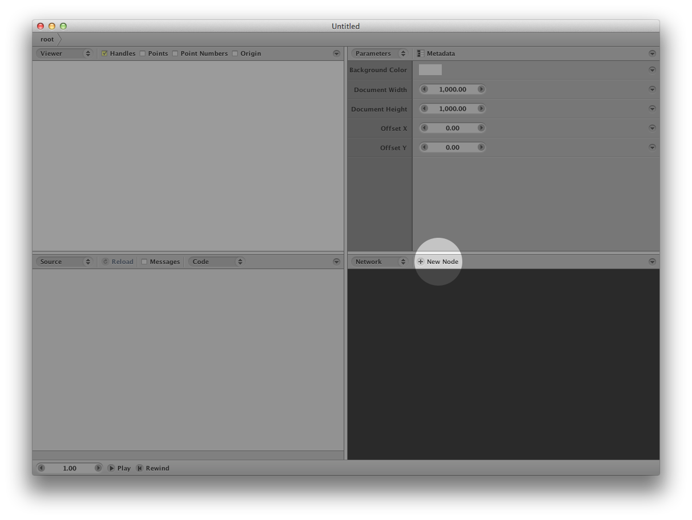
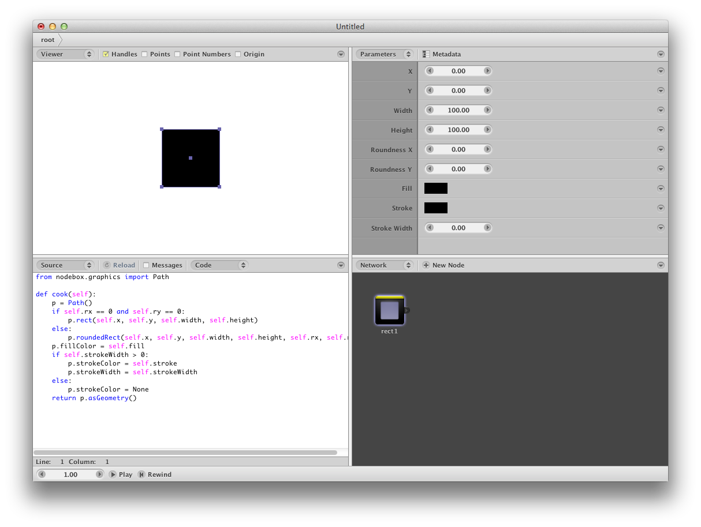

NodeBox 2 is an open-source software package for the creation of generative art and design. The software uses a modular node components that can be connected to form a graph, or network.
NodeBox 2, in its current incarnation, is mostly suited for vector graphics: think points, contours, paths.
You can download the software on the offical NodeBox 2 website. We have versions for Mac, Windows and Linux.
The Experimental Media Research Group (part of Sint Lucas Antwerpen and the Karel de Grote Hogeschool) created and maintains NodeBox 2. Since the software is free and open-source, we get contributions from enthusiasts using GitHub.
Generative design is a design method where the output – image, sound, architectural models, animation – is generated by a set of rules or an Algorithm, normally by using a computer program.
Wikipedia
In a design process, computers are used to solve production problems. Normally, this process uses a one-to-one relationship where one action by the user generates one response. (For example, generate the font face of title X).
In generative processes, one action by the user could trigger a whole range of responses. We can even take intermediate results and act on them.
Essential components of generative design are:
In the following experiment, we'll try out a simple set of rules. Since we require a visual result, we need a canvas: a piece of paper. We'll use grid paper which looks nice and formal, ideal for following procedures.
Every one works according to the same design schema:
We select the most interesting results and build a grid according to the same logic.
In essence, we've set up a generative process. Everybody started with 1 assignment but by the individual variation, and the fact we work as a group, we get many variations.
By combining this set of rules with the speed of the computer to follow those instructions, we can massively increase the number and complexity of the rules and variations. This is what NodeBox does.
Open the program. After the loading screen, it looks like this:
Click the highlighted New Node button. This shows a selection list:
For now, find the rect node and double-click it. The dialog will dissapear and a new node will show up in the network panel.
The interface now looks like this:
